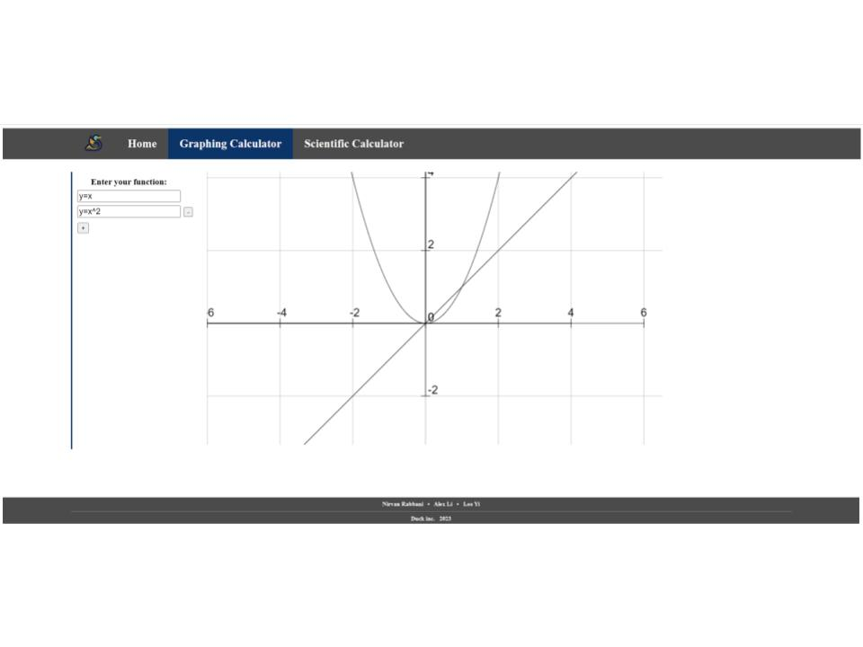
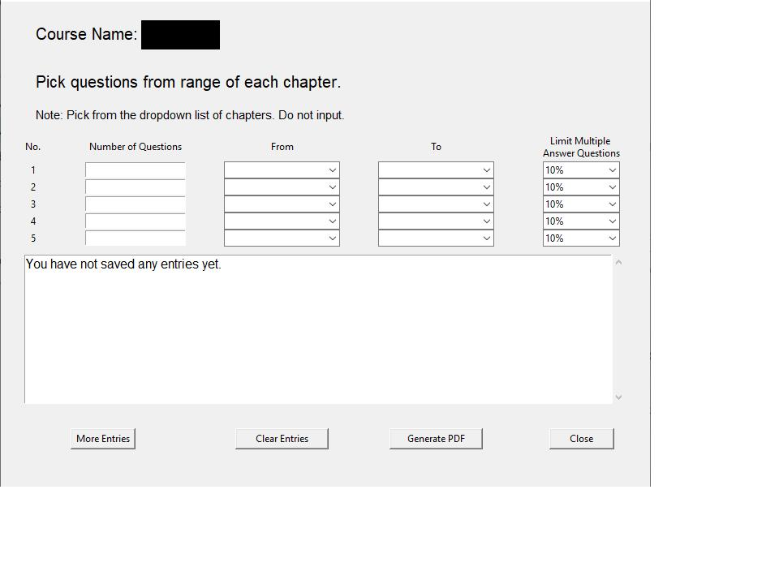
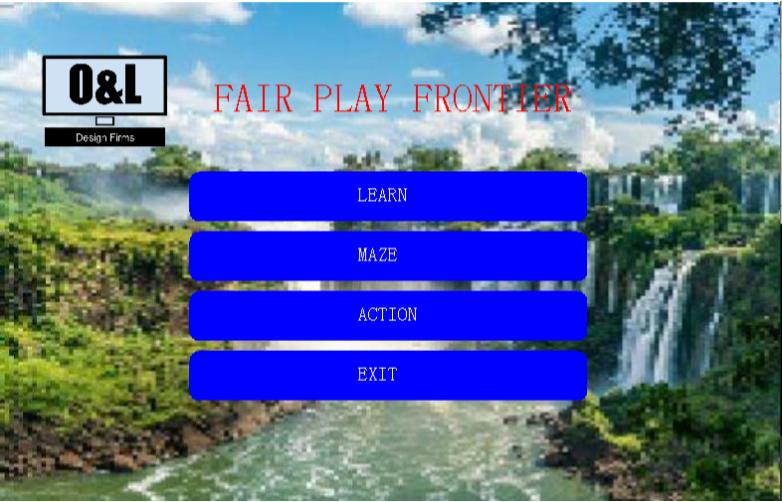

Graphing Calculator

This is a graphing calculator that allows you to find the trend of certain functions/equations. Also comes
with a scientific calculator.
Made in collaboration with Leo Yi and Nirvan Rabbani.
Quiz Generator
Generate a quiz by choosing how many questions per chapter you want. Make sure to keep a csv file called "files" in the same folder with proper formatting.
Fair Play Frontier



Our ICS4U0 Final Project, created by myself and my partner, Raymond Ouyang. Our game aims to teach the user about video game toxicity, the forms of video game toxicity, and how to combat it. It contains 3 levels, a learning level, a maze level, and an action level. In the learning level, you can learn about video game toxicity. In the maze level, you navigate a maze, with questions in the center of each crossroad. Answering the questions correctly will allow you to progress. In the action level, you face off against an AI who is stronger than you. Responding to their toxicity correctly will allow you to gain buffs to beat the AI.